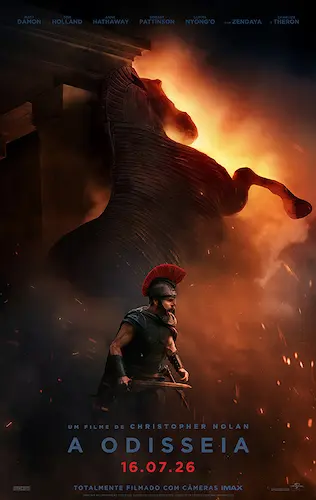

A Odisseia de Christopher Nolan é um filme que ilustra a obra de Homero.
Homero foi um poeta épico da Grécia Antiga, ao qual são atribuídos poemas épicos como a Odisseia e a Ilíada. Apesar de ser considerado uma figura importante da literatura, pouco se sabe acerca da sua vida. Sabe-se que os poemas que a ele foram atribuídos, foram compostos num contexto de tradição oral, transmitidos de geração em geração antes de serem escritos. Além disso, existem várias cidades gregas que reivindicam ser o seu local de nascimento. A influência de Homero estende-se da Grécia Antiga à atualidade. Os seus versos serviram como inspiração a poetas como Virgílio e Luís de Camões.
|
 |
A Odisseia é um filme de 2026, escrito e dirigido por Christopher Nolan.Uma adaptação do antigo poema grego Odisseia, de Homero, o filme é estrelado por Matt Damon como Ulisses, o rei grego de Ítaca, e narra sua longa e perigosa jornada de volta para casa após a Guerra de Troia, enquanto tenta se reunir com sua esposa, Penélope, interpretada por Anne Hathaway. O elenco também conta com Tom Holland, Zendaya, Lupita Nyong'o, Robert Pattinson, Charlize Theron e Jon Bernthal, entre outros. Nolan e sua esposa Emma Thomas produzem o filme por meio de sua empresa Syncopy, com distribuição da Universal Pictures. |